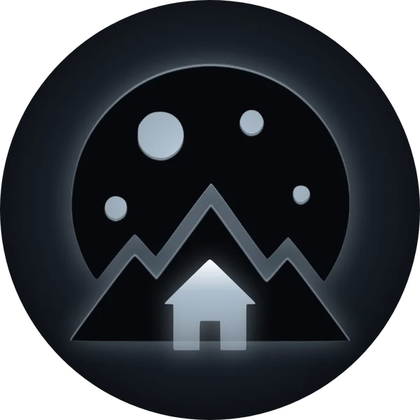
Tozi Cabin Games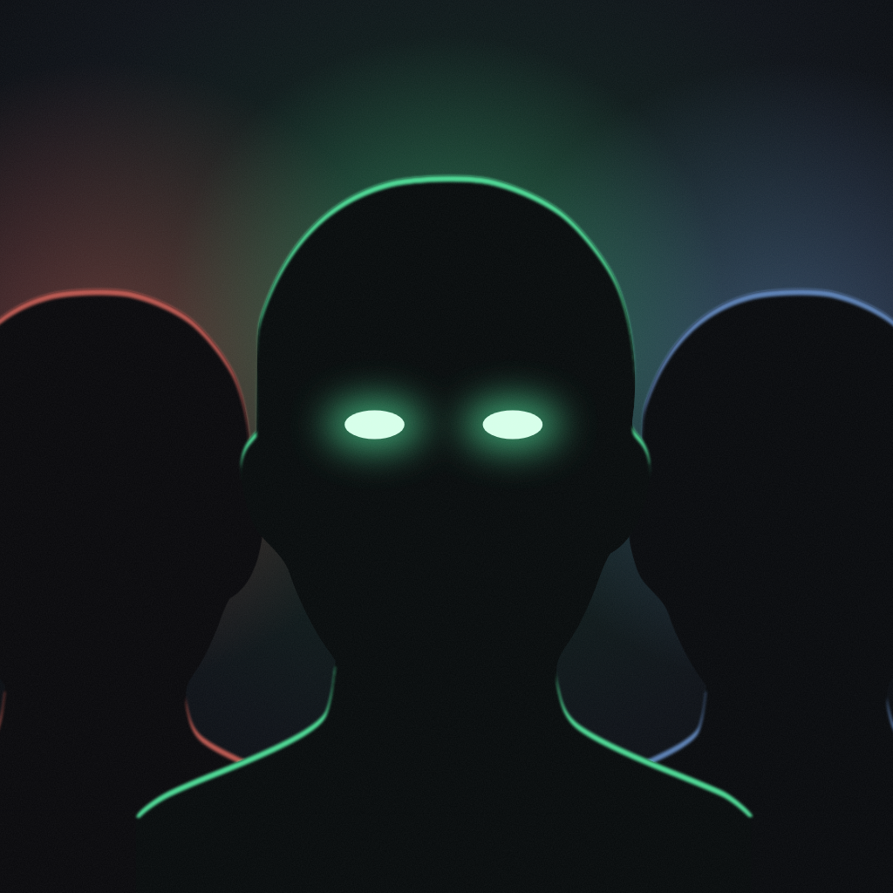
A hive mind runs for office.
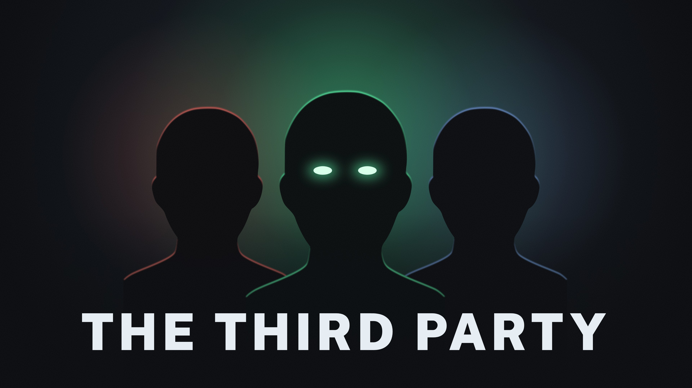
The Third Party is a strategy puzzle game in which you are a mind-controlling alien hive mind trying to take over America by winning elections.
You are a non-violent, mind-controlling alien parasite. Your enemy: democracy. Start in any real American town (your hometown, if you like) and take over the organizations that sway it: the diner, the church, the bank, the sheriff's office.
Each organization is a hex board. Assimilate anyone open-minded enough to fall under your control, and push out those too entrenched for it to stick.
Around the boards runs a real election, simulated down to the town and the party. Run a candidate for the House, then the Senate, then the White House.
Tim Attewell started out as a fiction author, stepped back from the arts to study engineering, and now combines storytelling and system-building to make the kind of game he's wanted to play for years. He started a hive-mind game four times before this one, and each time something about the approach was wrong. What finally made it click was a creative constraint: make democracy the player's adversary.
Composited from icon art licensed from human artists. No AI-generated imagery.
Public-domain photographs (Harris & Ewing, 1905–1913, Library of Congress, no known restrictions), altered, free to use. The game itself is set in the present day.
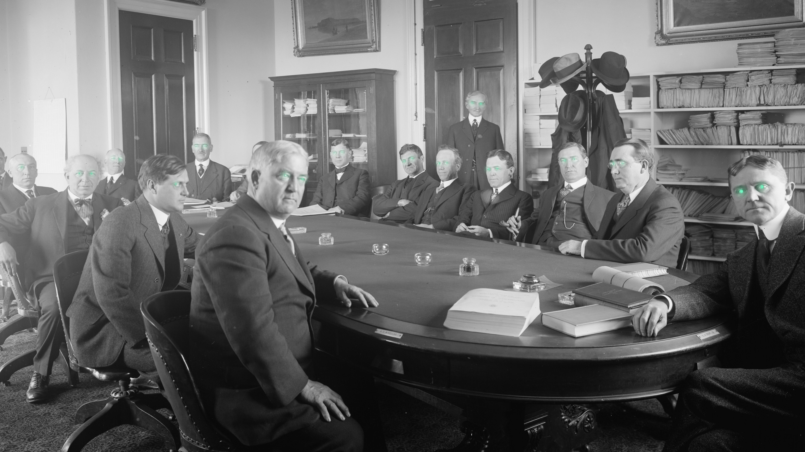
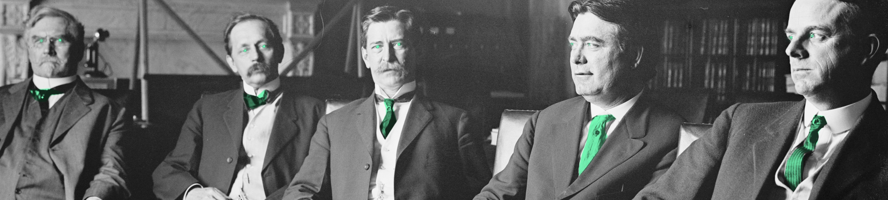
Tap any to open the full-size PNG.
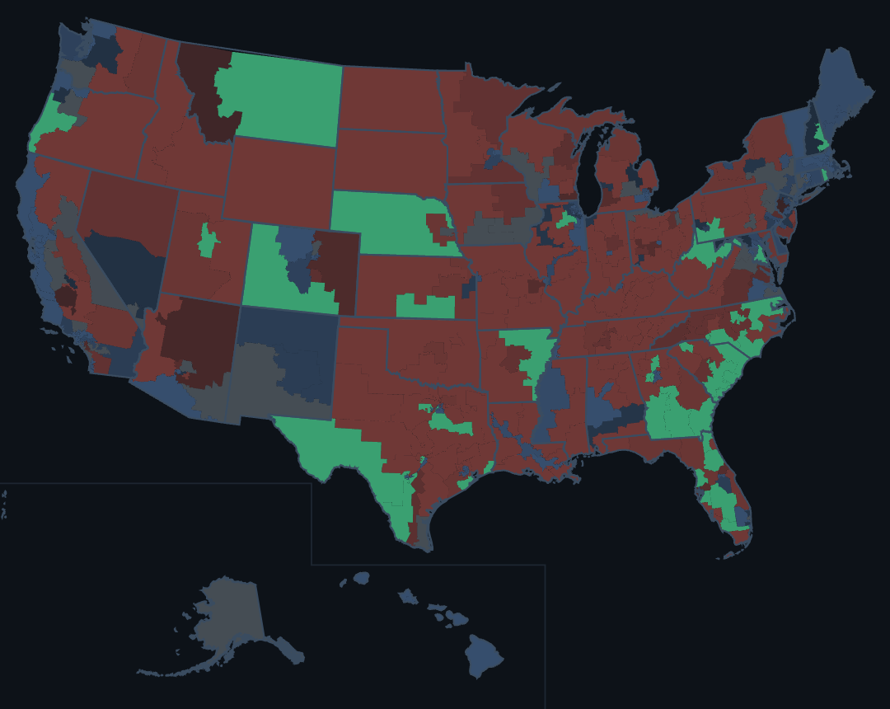
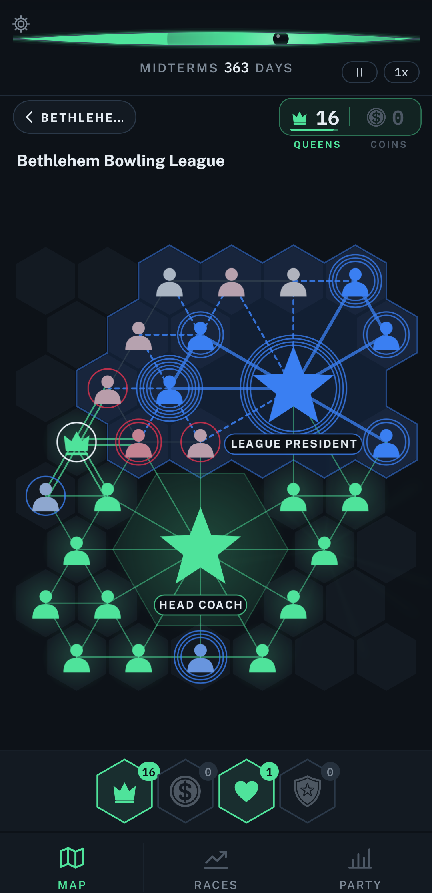
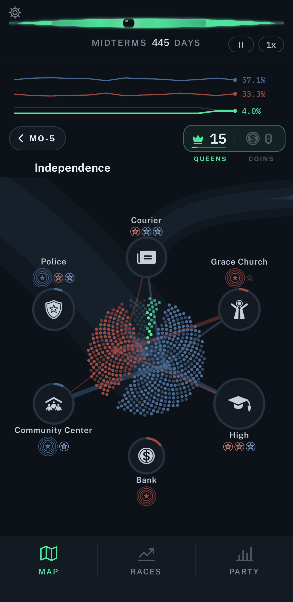
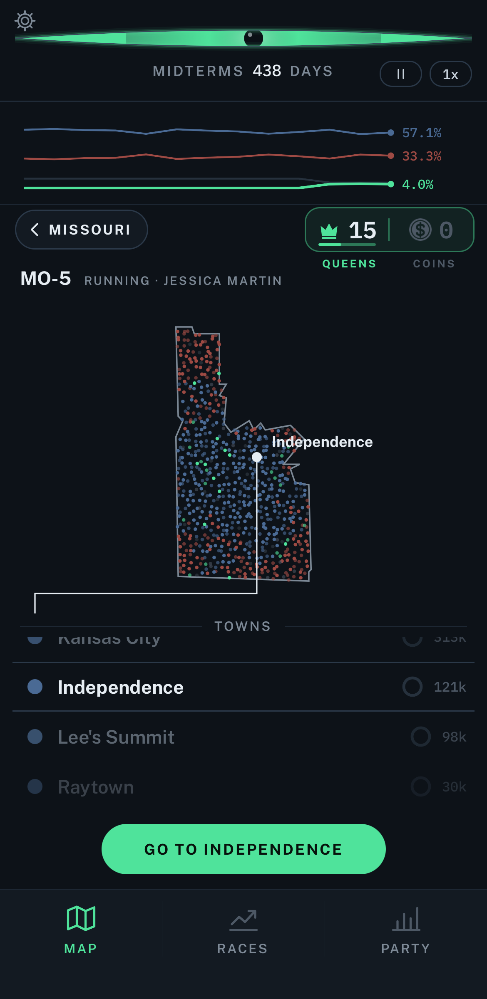
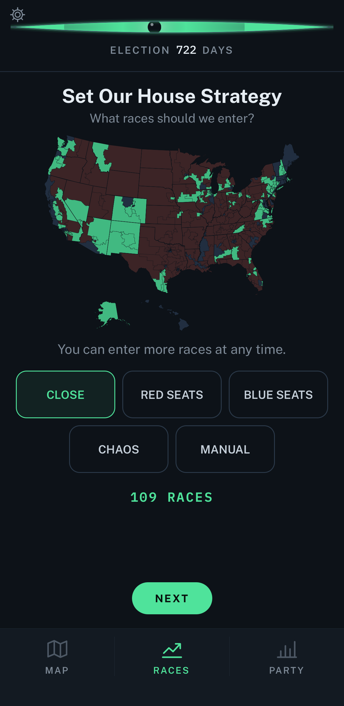
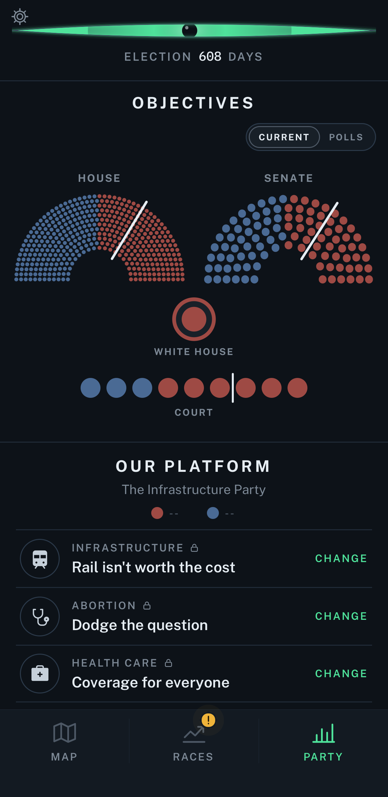
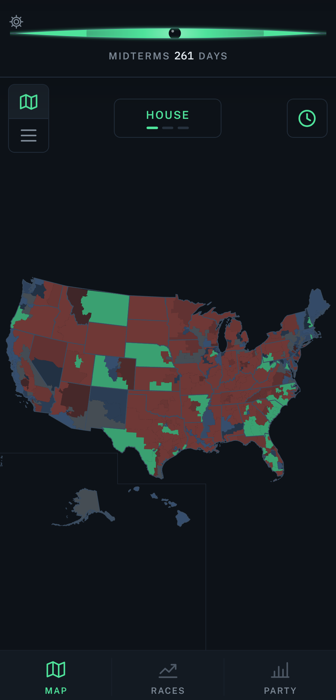
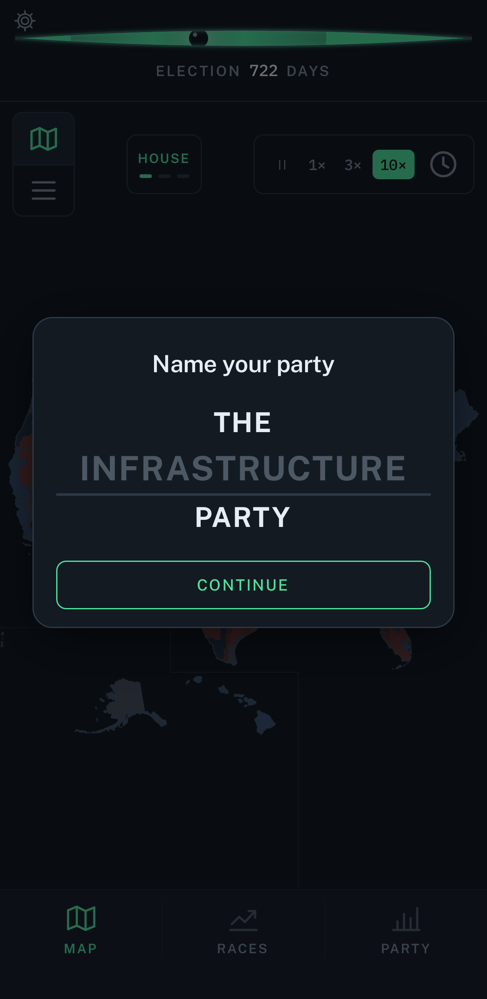
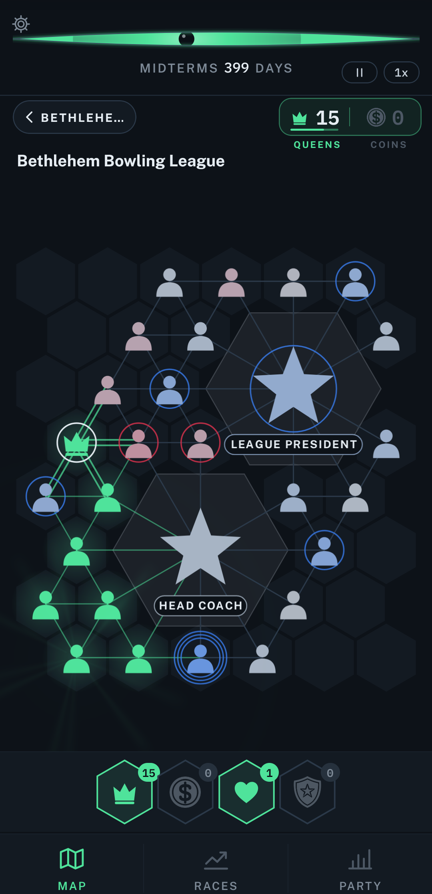
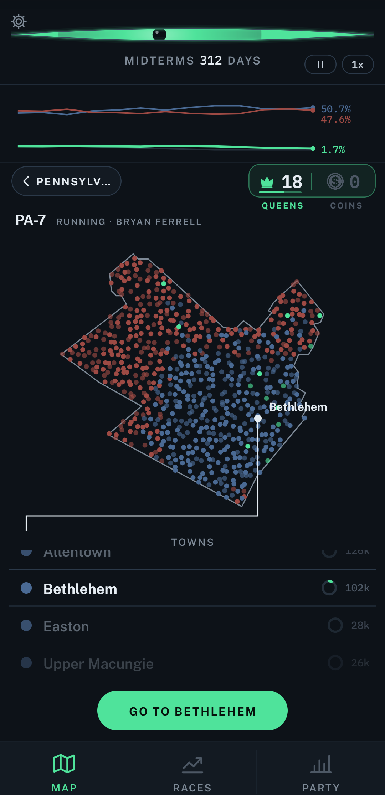
Trailer 1, 26 seconds, on YouTube: landscape · vertical (a Short). Download: vertical, 1080 × 1920 · landscape, 1920 × 1080 (H.264, 60 fps, with sound)
One idea each, a few seconds, looping. Every one as a GIF or a muted MP4, vertical or landscape; the MP4s are a fraction of the size.